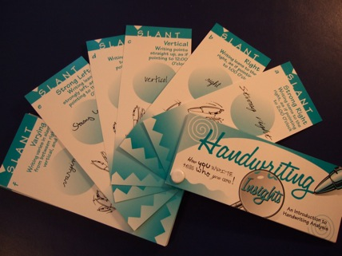

Handwriting Analysis Terms
1. ZONES
We will divide the individual letters into three zones to
better understand how the writer makes specific use of
their
mind (UZ),
their
emotions (MZ)
and the
physical elements in their environment (LZ).
In the English alphabet, which is also used for most
European languages, including French, German and Italian, a
part of every letter is found in the middle zone. The upper
zone has six bizonal letters: b, d, h, k, 1 and t. The
lower zone has six bizonal letters: g, j,
p, q, y
and z. The middle zone has thirteen single zone letters,
the five vowels, a. e, i, o, u, plus c, m,
n,
r, s, v, w and x. The letter "f" is the only trizonal
letter in the alphabet.
Wherever you find extra emphasis of size, embellishment,
width, simplicity, force or meagerness, this is the zone
the writer is expressing most strongly at that moment of
writing. This is why we need more than one sample of
writing for a full, in-depth analysis; it eliminates a
"mood-of-the-moment" interpretation.
Examples and what to look for are in the Handwriting
Insights deck.
2.
Connections
In
American schools, writing is usually first learned by using
the manuscript printed form. As the writer matures he
learns the more sophisticated method of joining letter
forms called cursive writing.
The four most common connective forms are garlands,
arcades, angles and thread. You will learn to recognize
each type of form and how to interpret its use within the
writing. None of us uses one connective exclusively. One
form usually dominates and an another is secondary. The
other two forms of connectives may also be present to a
lesser degree. Combinations of writing form reveal the
personality in each writing, but only in part. You still
must take into consideration the arrangement of the writing
and the symbolism of margins, zones, spacing and slant.
GARLANDS:
The
most common form of connective between letters is the cup
shape of the garland, curved at the bottom and open at the
top. It can be found in all three zones, between letters,
within letters, even at the beginnings and endings of
words.
The garland is a soft, easily stroked connective depicting
the writer who is receptive, compliant and easy going. He
may be warm and sympathetic, empathetic and sentimental. He
is open and responsive to the people and the environment
around him. The writer who uses many garlands is often said
to be "people oriented". He feels before he thinks.
ARCADES:
The
arcade, or inverted garland, is shaped like an arch, curved
on top and open at the bottom. M's, n,s and h's are the
most obvious arcade formations in the alphabet. You may
also find arcades between letters especially in the
connection between o, v and w and the letter which follows
them.
Usually mixed with other connectives, the arcade is used by
the creative personality. This writer is a constructive
thinker, one who deliberates before making up his mind. He
may use this slow and deliberate action as a form of
cautious contrcl and self protection. There is a certain
dignity and formality in the writer who uses arcades to a
dominant degree.
ANGLES:
The
speed and energy used by many writers often produces abrupt
changes of direction which create an angle at the baseline
and sometimes at the top of the letter. This sudden change
of direction must also make a pause before the writing can
proceed. An angle interrupts smooth flow of thought and
action, and an abrupt manner is often the result. The
writer who habitually uses angles is often analytical,
tense and self disciplined. He usually can see more than
one approach to a problem and therefore often has some
degree of executive ability. He uses will power to direct
and control his actions.
THREAD:
Thread
is the least used of the connectives, and sometimes is the
hardest to recognize. There are three general types of
thread.
A. THE THINNING OF THE STROKE ITSELF. You may need
to use your magnifying glass to be sure you are looking at
thread. It looks like a piece of thread that has been
broken rather than cut cleanly. It "feathers" out with
lessening pressure of the pen. Look for it between letters
at the end of a word, and especially in i dots and t
crosses that are made with speed.
Interpretation of Type 1 Thread indicates a writer who is
in too much of a hurry to do a precise bit of work. He may
complete the essentials of a job, but he evades
responsibility by neglecting the finishing details. He
loses interest quickly and goes on to the next thing.
Impatience is a part of this writer's
personality.
B.
THE DIMINISHING SIZE OF LETTERS WITHIN A
WORD.
As Type I thins out the individual stroke, Type 2 thins
down the letters in a word. When a whole word or part of a
word "threads" the first letters are larger than each
successive letter, and MZ size progressively diminishes in
a regular pattern.
This type of thread is associated with a diplomatic
personali-ty, one who is capable of seeing the whole, broad
picture of a situation. He elects to lessen the force of
his personality as he evaluates the situation, and he uses
tact and diplomacy to do so. He may even point out a
different direction of thinking as his method of evading
the present crisis.
C. THE SINUOUS STROKE. This
third type looks like a spool of unraveled thread. You can
see the undulations of the strand as it frees itself. This
is a quick, fluid motion of writing combining alternate
garl.and and arcade formations. It can be found in al 1
three zones but is most apparent in the MZ. Paul uses it in
the MZ and UZ.
Interpretation of Type 3 Thread shows a real evasion
expert. The sinuous strokes of his pen are as devious as
the snake that slithers around obstacles. This writer
seldom faces an issue, but rather misdirects or eludes the
reality with clever language, slight of hand or a downright
refusal to face facts.
3.
The
SLANT of
the writing indicates the Emotional Response. Letter slant
can best be seen in letters containing upper loops: the b,
d, h, 1, k, and t. The more the letter slant leans toward
the right, the more emotional response can be
expected.

Most
people write with a slight right slant (B). This shows a
willingness to comply with company rules, an ability to get
along with co-workers, and put up with the boss's
idiosyncracies. Writers with an extreme right slant can
function well on the job, but might become hysterical under
sudden emotional stress. Extreme left-slanted writers are
sometimes antisocial, non-communicative, even defiant at
times.
4.
Baseline Slant =
Goal Directiveness
Writing
"uphill" reveals the applicant worthy of further
Trait-match evaluation. He's optimistic, ambitious and
cheerful. This is a good start, and, if the other traits
bear up well under your scrutiny, a welcome addition to any
office force or gang crew. Writing ''downhill" may be
caused by a temporary depression, ill health, or physical
fatigue. If this applicant has special skills necessary in
your business, it would be wise to have him return on
another day and obtain another sample of his writing. The
first downslanted sample could be just a temporary
discouragement from job-hunting. If the second sample has
the same downslanted appearance, it is a warning of an
ingrained pessimism which keeps this applicant on the
job-seeking circuit.
The writer of a firm, straight, even baseline controls his
moods, allowing him to go directly toward his goals without
getting side-tracked.
While a very slight wave in the baseline is a common sign,
an unusual up-and-down fluctuation identifies the moody
individual. A ruler placed under the first and last letters
in a line of writing is an excellent way to determine an
uneven baseline. Be sure you need this person's talents
desperately before hiring him. He may be a go-getter on his
''up" days, but if he's in a ''downer" mood, he probably
won't even show up for work.
5.
Spacing
Spaces in writing are just as important to the Traitmatch
analyst as the writing itself. Spaces are found around the
whole page of writing (the margin); in the amount of room
that the letters take up (the letter size); in the generous
or compressed usage of space between letters, lines, and
words. All offer many clues to detect the occupational
personality. A general rule-of-thumb is that the way in
which a person uses space when writing indicates his use of
space in his work. Check the application form. How did the
prospect use the spaces within the blanks, boxes, or
fill-ins? If he crowded the
letters to the left, he's fearful of his future. If he
pushed all the letters to the right, he's ambitious and
eager for the job. If he couldn't contain his writing
within the spaces provided, he's not a good judge of time
and space.
6.
Margin =
Attitude Toward Environment
The position of the writing on a page within a margin frame
shows how the potential employee regards his position or I
space" within the company framework.
PICTURE FRAME MARGIN (even, well-defined) =
WIDE LEFT MARGIN (narrow right margin)
NARROW LEFT MARGIN (wide right margin) =
7.
Letter Size
= Ego.
Every letter takes up space, too. Some letters extend into
the upper area of the writing and are referred to as
upper-zone letters: b, d, h, k, /, and t. The lower-zone
letters are the g, j, p, q, y, and z. Most letters are
found in the middle zone of writing. The size of the middle
zone is the major factor considered in handwriting
analysis. Almost all other signs are compared to it.
f is the only letter that reaches all three zones.
Large writing and small writing refers to the middle-zone
size, and are both easy to spot. Most people's script falls
somewhere in between, however. This ''average size" of
writing is found in the sample of applicants who can fit
into almost any kind of job situation for which they are
qualified. Their uniqueness will be revealed in other
writing features. Large writing indicates a person who will
need plenty of space in which to operate. Don't try to put
him behind a desk or in any small confining area.
8.
LARGE MIDDLE ZONE
(large writing) =
demand for attention
need for elbow room
Small writing reveals the individual willing to work behind
the scenes. This writer can also stick with a detailed job
for long periods of time.
9.
SMALL MIDDLE ZONE (small
writing) = reserved
intelligent
modest, unassuming
ability to concentrate
non-spotlight job
10.
Upper-Zone Extensions
= Philosophy of Life
The upper zone of writing holds the philosophy of life. It
contains the writer's thought patterns including his
ability to utilize abstract thinking in his daily routine.
Most people push their letters to a moderate height into
the upper zone showing their ability to think clearly about
practical things. This writer fits nicely into a job where
concrete ideas are required, as long as they are not too
technical.
TALL UPPER-ZONE EXTENSIONS =
abstract thinker
intellect
philosophical mind
Short upper-zone extensions are made by the writer who has
short term goals, and is not idea-oriented.
SHORT UPPER-ZONE EXTENSIONS =
practical, down-to-earth
mechanical
short-term goals
Lower-Zone Extensions = Physical and Sexual Drives
The prospective employee's interest in physical activity is
the primary interest of many companies. The lower-zone
extensionsreflect the applicant's physical and sexual
activity, as well as his concern for money and food. Large,
full lower loops, especially when they extend far below the
baseline, are made by the person who wants to live life to
the fullest.
LARGE LOWER LOOPS =
extreme physical drive
sensual
hungry
active
Long lower loops disclose the person needing plenty of
physical space.
LONG LOWER LOOPS = strong physical drive
Short lower loops expose the individual entirely
disinterested in physical activity.
disinterested in physical
possible laziness
sedentary
"NON-LOOPS" (lower-zone extensions resembling sticks)
stoicism
simple tastes
gets the job done
11.
Extreme Expansion
= Self-Expansion.
Expansion
is the horizontal extension of letters and space,
presenting a stretched appearance.
EXTREME EXPANSION =
need for room
generosity
freedom from supervision
(works best alone)
entrepreneur
Extreme Compression = Self-Limitation.
Compression is the squeezing of letters, words and spaces.
introversion
ability to work in small spaces
the office "tightwad''
12.
Spaces Between Lines
= Capacity For Thought Organization.
LINES SEPARATED, EVENLY SPACED =
clear thought
able to organize work

LINES CROWDED TOGETHER, OVERLAPPING LOOPS
confused thinking
poor organization of time and space
overly familiar
Spacing Between Words
Spacing between words should be about the same width as the
middle-zone letters. If spacing is consistent, it adds to
the possibility of the writer being consistent. It is a
positive trait for any job.
13.
PRESSURE
Pressure measures the degree of intensity the employee will
put into his work as well as his physical vitality and
stamina. For instance, poets, speakers, politicians and
ministers often have heavier writing pressure because they
put emotion into what they have to say. The type of pen
used will have some effect on the pressure. The soft-tipped
pen can conceal the light-pressured writer. The Traltmatch
analyst can tell this by turning the paper over and running
his fingers over the back of the writing surface. If you
feel or see the embossing caused by pressure from the pen,
you are assured that the writer was using a ball point, not
a soft- tipped pen and the pressure is genuine.
Pressure takes a certain amount of physical exertion, and
the soft-tipped pen user enjoys the easy flow of ink over
the page. Soft-tipped pens are a cop-out for physical
labor. However, they are also used by artists and sensual
people. Check with other Traitmatch signs to determine if
the writer is lazy.
HEAVY PRESSURE =
MEDIUM PRESSURE =
perceptive
good memory
conservative
LIGHT PRESSURE =
gentle, cultural
avoids confrontation
sedentary
prefers intellectual approach
14.
SPEED
Speed is found in the flow of the writing and indicates
speed of thought, action and perception. Additionally,
writing that has few or no beginning strokes shows the
stripping away of unnecessary details contributing to the
applicant's efficiency in getting the job done. Note the
T-crosses. If the cross is longer on the right side of the
stem than on the left side, the writer is hurrying to
complete his simple task of crossing the t. 1-dots which
fall to the right of the stem also indicate speed.
FASTWRITING =
alertness
perceptiveness
flexibility
maturity
rapid thinker
SLOWWRITING =
slow thinker
delibrate
cautious thinker
precision
15.
CLARITY
Clarity involves all of the basic factors of handwriting
analysis
in a positive way. It's a good idea to keep in mind that
when
clarity in a written sample is combined with-
* A slight, right slant = interest in communicating with
others;
* Medium size writing = willingness to contact others
physically and mentally
*Balanced expansion = reaching out to become involved.
*Even margins = good sense of self-identity within the
environment.
*Good spacing between letters = generosity of time, money
energy.
*Good spacing between words = interest in social contacts.
*Good space between lines = ability to think clearly and
separate ideas.
* Clear formation of letters = wish to impart information
and consideration for others.
Illegible writing, whether scribbled by a world-wise
scientist or by your inexperienced job applicant, indicates
the individual who doesn't have the time or inclination to
communicate. Someone once mentioned that the less legible
the writing, the more intelligent the writer. Ever since
then, some people have hidden their laziness and
inconsideration behind that remark.
One secretary complained, ''My boss is such a terrible
writer I can hardly make out what he means. Last week he
didn't read over a letter before he signed it and I had
typed something all wrong. I got bawled out. I think it was
his fault, don't you?''
You bet! But secretaries aren't the only ones who suffer.
Ask your local pharmacist, for instance.
Illegible script is the curse of good communication, and
writing is-first and foremost -communication.
Many bosses have an executive type of mind; sharp, alert,
quick. But the employer who doesn't take the time or effort
to make his written thoughts clear enough to be translated
by a secretary or anyone else is both inconsiderate and
lacking in common sense.
Speed is the prime offender. We think faster than our
fingers can move. Unless control is exercised over both
thoughts and fingers, the results are usually unreadable.
There are, however, other reasons for illegibility in
handwriting. It may be caused by emotional stress or an
illness resulting in muscular impairment or hysteria. Also,
a dishonest person hides his intentions behind poor
writing.
Illegibility maybe caused by more serious reasons than
speed or inconsideration. When the physical or mental
vitality of a writer is impaired through the use of drugs
or alcohol, illegible writing is often a result. The uneven
baseline is usually the first clue, signaling the lack of
motor control. Letters not clearly formed due to speed may
occur in everywriting at anytime, but when a sequence of
letters fails to make sense, there is more than speed or
inconsistency at work. If this is repeated on a page or two
of writing, drop that application in the round file. You
don't need the problems that can be brought to your
workplace by this kind of employee.
III health often shows up in illegible writing especially
if the writing also has weak pressure. There just is not
enough vitality there for the writer to get through a good
day's work. However, we all have our off days. If all other
factors are favorable, and you might like to have him on
your work team, suggest he comeback another time to repeat
his writing sample.
**********************************************
Experience the thrill of analyzing handwriting! Entertain
family and friends by showing them what their handwriting
reveals.
Handwriting
Insights is a high quality deck of 64 connected,
illustrated cards that teaches you handwriting analysis as
you use it. Analyze handwriting in 5 minutes. Results are
worded constructively so people feel good about what you
have to say.

We
are closing out our inventory. While supplies last you can
order your kit
Book Clearing House
for only $10.95.
Or, if you prefer to order over the telephone you can call
Book Clearing House
In the United States, dial toll-free: (800)
431-1579.
International
customers, please call: (914) 835-0015.